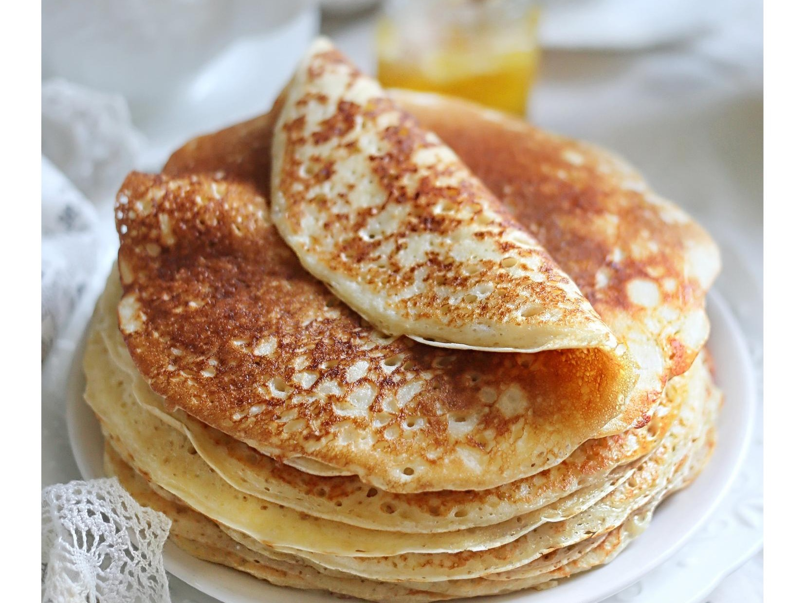

Это самая простая и удачная версия царских блинов, которую я встречала. Блины получаются шикарные! Пышные, нежные...
В рецепте лучше использовать жирные сливки и предварительно их хорошо взбить. Если же у вас есть 20% сливки, их тоже можно добавить, но взбить их не получится. Текстура готового теста будет другая, но тоже получится очень вкусно.
Подавать такие блины непременно с икрой. Ну или со слабосоленой рыбкой. А если вы скорее по сладкому, то берите мед со сметаной или варенье.